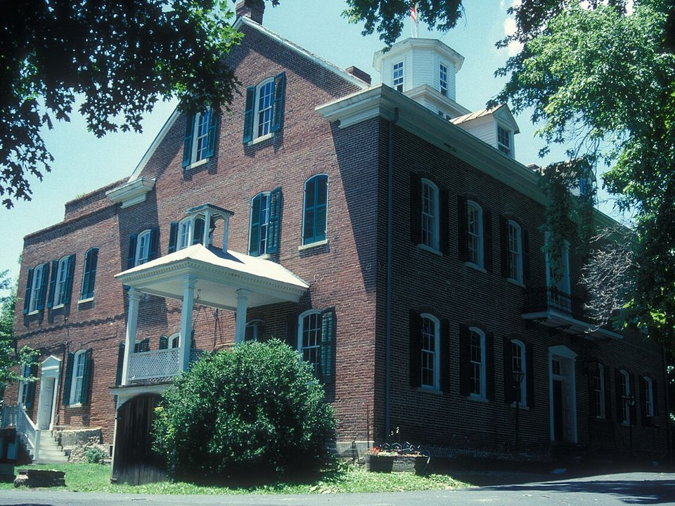

Hermann · Vineyard inn & spa
Hermann Hill Vineyard Inn & Spa
A boutique inn and cottages on a hill above town.
Official details for Hermann Hill Vineyard Inn & SpaA German river town with wineries.
Hermann was founded by German immigrants in 1837 and by the late 1800s was one of the largest wine regions in the country. Its brick streets and wineries sit on the bluffs above the Missouri River. Land at the small municipal airport, stay at Hermann Hill Vineyard Inn & Spa, taste at Stone Hill, Hermannhof and Adam Puchta, have dinner in Stone Hill’s old cellars, and come back for Oktoberfest.

In our plane it’s a short flight.
Where we’re staying Dinner Things to do The plan
I’ll handle the flight planning; you handle the fun planning!
Time illustration: direct distance at 150 KTAS plus 15 minutes for departure and arrival, matching the discovery page. Use ForeFlight for your actual flight plan.
Check the weekend weather at both ends → Flight category, your minimums and the crosswind on the best runway.
More in Aviation & getting around below. Crew cars change often: call the FBO before you go. How to have a rental car waiting at the FBO · Know something we missed? Tell us.
63M, Hermann Municipal, is a non-towered city airport at 508 feet with a 3,198-foot runway, a few minutes from town.
Hermann Municipal Airport, Hermann, MO
Unattended, with no fuel listed. Arrange a ride with your inn or a local service before you go. Washington (KFYG) and Jefferson City (KJEF) have fuel and longer runways. No live fuel price is shown.
Midwest flying: spring and summer thunderstorm lines, summer haze, gusty winds, river-valley fog on calm mornings, and winter icing. About 680 nm from Myrtle Beach: plan a fuel stop and three nights.
Rates and availability need travel dates. Oktoberfest weekends book a year ahead.
A boutique inn and cottages on a hill above town.
Official details for Hermann Hill Vineyard Inn & SpaSuites and hillside cottages with river views, a short walk to wineries.
Official details for The Inn at HermannhofRooms in five historic buildings in downtown Hermann.
Official details for Captain Wohlt InnB&Bs and guest houses in Hermann.
Visit Hermann for More places to stayPrices and availability for your dates, through our partner Stay22. This is an affiliate link: we may earn a commission at no cost to you. The picks above are never paid.
Reserve weekend dinners.
Dinner in Stone Hill Winery’s old carriage house and horse barn.
Official details for Vintage 1847Award-winning bratwurst and German sausages.
Official details for Hermann Wurst HausMany Hermann kitchens close early in the week; check hours.
Hermann Wine Trail for More restaurantsTasting rooms are busiest on fall Saturdays.
This prototype links to the local visitor site. It does not yet match events to your travel dates.
A spring German festival.
Visit Hermann for MaifestEvery weekend in October.
Visit Hermann for OktoberfestCrush season at the wineries.
Hermann Wine Trail for HarvestCheck the local calendar when choosing a weekend, and confirm dates and tickets with the organizer.
A sample Hermann weekend. Plan three nights for the flight. No bookings or availability confirmed.
Land at 63M mid-morning.
Bratwurst at the Hermann Wurst Haus.
A short walk, then back to the airport.
Land at 63M, subject to weather and your actual flight plan.
Walk the brick streets and Hermannhof.
Dinner at Vintage 1847.
Stone Hill cellar tour.
Adam Puchta and the wine trail.
Dinner in town.
Coffee and a walk by the river.
Confirm your ride and fuel plan; there is no fuel at 63M.
Afternoon thunderstorms are common in summer; leave in the morning.
Stone Hill Winery cellar tour.
Explore.
Dinner in town.
These details make the difference between an appealing list and a usable getaway.
Lodging, then rides.
Plan fuel at KFYG or KJEF.
3,198 feet by 50 feet; check performance.
April to June and September to October.
Picks and links reviewed by WingAway Weekends. Hours, prices, menus and availability change often, so confirm directly with each place before booking. Spotted something out of date, or have a favorite we missed? Email us at hello@wingawayweekends.com.
WingAway Weekends helps you discover the destination. Use ForeFlight and current official aviation information for route, performance, weather, NOTAMs and preflight decisions. Flight planning and PIC responsibility stay with the pilot.